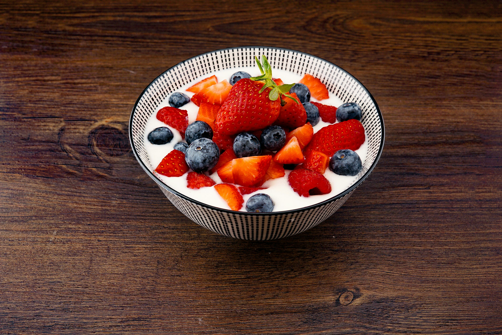

Back
Muesly

Description
A fresh sweet dish full of health and taste.
Super easy to create, and super tasty to eat!
Ingredients
- 1 yogurt
- 1 green apple
- Some granola
- Almonds and nuts
- Tahini
- Silan
Steps
- Put the yogurt in a bowl.
- Cut the apple to small cubes and add them into the bowl.
- Add some Tahini and Silan as you want...
- Decorate your dish with some granola, almonds, and nuts.
- Enjoy!